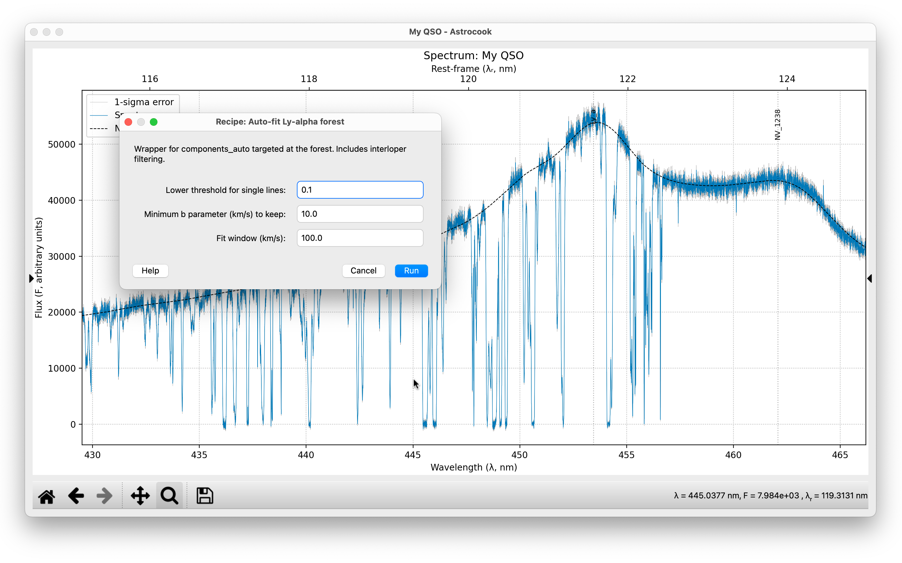
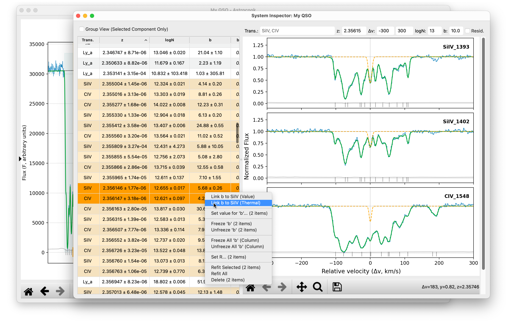

Absorption Systems#
Detecting and fitting absorption lines is the core mission of Astrocook. The software provides a tiered approach: fully automated pipelines for initial detection, and a dedicated System Inspector for detailed Voigt profile analysis and manual refinement.
1. Automated Detection Pipelines#
For most science cases, you should start with one of the automated pipelines in the Absorbers menu. These recipes scan the spectrum, identify features, and perform an initial fit.
Ly-alpha Forest#
If you are analyzing a high-redshift quasar (\(z > 2\)):
Ensure your Emission Redshift is set correctly.
Go to Absorbers > Auto-fit Ly-alpha Forest….
Threshold: The default score (
0.1) is usually fine.Min b: The minimum Doppler parameter (e.g.,
10km/s) helps filter out noise spikes or unphysically narrow lines (interlopers).Click Run.
This pipeline focuses on the region between the Ly\(\beta\) and Ly\(\alpha\) emission lines.
Metal Doublets#
For finding distinct metal systems (CIV, SiIV, MgII) redward of the Ly\(\alpha\) emission:
Go to Absorbers > Auto-detect Doublets….
Multiplets: You can customize the list (e.g.,
CIV, SiIV, MgII).Click Run.
This recipe searches for pairs of lines with the correct velocity separation and optical depth ratios.
General Detection#
For a more generic search (or if you are looking for specific ions):
Go to Absorbers > Identify Absorption Lines….
This generates a list of candidate regions but does not fit them immediately.
You can then visualize these regions by selecting
abs_idsin the Aux. Column dropdown of the Plot Controls.

2. The System Inspector#
Once you have systems (either from a pipeline or added manually), the System Inspector is your cockpit for detailed analysis.
To open it: View > View System Inspector.
The window is divided into two parts:
Left (System List): A table of all absorption components.
Right (Velocity Plot): A zoomed-in view of the selected system in velocity space.
3. Interactive Fitting & Editing#
The System Inspector allows you to modify the model dynamically.
Adding Components#
If the auto-finder missed a line:
In the Velocity Plot (right panel), Right-click on the background where the line should be.
Select Add [Ion] at z=….
A new component is added and fitted immediately.
Tip
If you see multiple transitions in the menu (e.g., Add CIV-SiIV), this will add linked components for both ions at that redshift.
Modifying Parameters#
You can edit values directly in the table:
Double-click a cell (
z,logN,b) to type a new value.The model (red line) updates instantly to reflect your change.
Constraints (Fix/Free)#
To fix a parameter during fitting:
Select the component(s) in the table.
Right-click to open the context menu.
Select Freeze ‘b’ (or
z,logN).The value will turn italic, indicating it is locked.
Parameter Linking#
Astrocook supports physical linking of parameters (e.g., tying the redshift of a CIV doublet).
Select two components in the table (hold
CtrlorCmd).Right-click on the parameter you want to link (e.g., the
zcolumn).Select Link z to [Other Component] (Value).
The value will turn bold, indicating it is dynamically calculated from the other component.
Refitting#
After manual edits, you often need to re-optimize the fit:
Refit Selected: Right-click the table and choose “Refit Selected” to optimize only the highlighted lines.
Refit All: Go to Absorbers > Refit All Systems… (in the main window) to re-optimize the entire spectrum, handling blends automatically.
